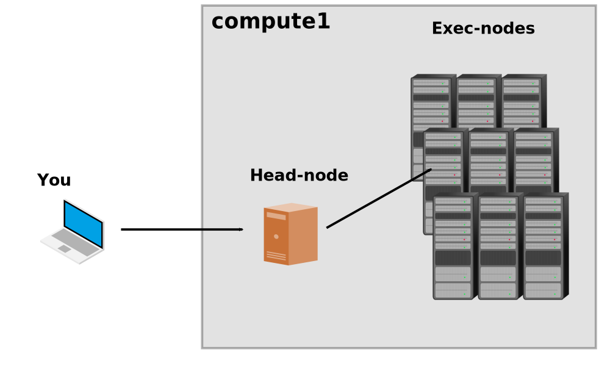

4. Learn to use Compute1¶
Before you start using Compute1, you should understand the general structure. When you SSH into Compute1, you will land on a head node. On a head node you can use b-commands to interact with LSF. LSF is the scheduling software that runs on Compute1. It is a system that manages the computing resources: it receives job submissions from users, and then it finds available exec nodes to run those jobs.
{kind=link}
Regardless of whether you want to run a batch job or interactive job, the general workflow for using Compute1 is
You write a job script
You submit that job to LSF with the
bsubcommandLSF will start running your job on an exec node
This section describes what you need to know to start writing and running your own jobs on Compute1.
4.1. The anatomy of a job¶
In brief, a job script specifies three things:
the job’s resource requirements (e.g., number of core, memory requirements, a time limit, etc.)
the job’s configuration (e.g., whether or not the job is interactive, the output log’s file name, the container in which to execute the job).
the commands that are executed when the job lands on the exec node
Lets look at an example. Previously you should have downloaded interactive.bsub. It is a basic interactive job. Here is its contents:
#!/bin/bash
#BSUB -Is
#BSUB -n 8
#BSUB -R "rusage[mem=40000] span[hosts=1]"
#BSUB -q rvmartin-interactive
#BSUB -a 'docker(registry.gsc.wustl.edu/sleong/base-engineering)'
cd /my-projects
bash
The lines at the top, starting with #BSUB, are specifying LSF options:
-Istells LSF this is an interactive job-n 8tells LSF this job needs 8 cores-R "rusage[mem=40000] span[hosts=1]"tells LSF this job needs 40 GB of memory and that all 8 cores should land on the same host (exec node)-q rvmartin-interactivetells LSF which queue this job should be put in-a 'docker(registry.gsc.wustl.edu/sleong/base-engineering)'tells LSF which container this job should be ran inside
The other lines are the commands that are executed when the job lands on the exec node. This job navigates to your project directory and starts a bash terminal (hence it being an interactive job):
cd /my-projects
bash
Next, lets consider a batch job. A batch job does not have an interactive terminal. Here is an example of a batch job to run a GEOS-Chem simulation:
#!/bin/bash
#BSUB -q rvmartin
#BSUB -n 16
#BSUB -W 168:00
#BSUB -R "rusage[mem=40000] span[hosts=1]"
#BSUB -a 'docker(registry.gsc.wustl.edu/sleong/base-engineering)'
#BSUB -J "Example 1-year 2x2.5 GEOS-Chem simulation"
#BSUB -N
#BSUB -u wustlkey@wustl.edu
#BSUB -o job-%J-output.txt
# Set up runtime environment
. /etc/bashrc # Source global bashrc file
set -x # Print executed commands
set -e # Exit immediately if a command fails
ulimit -s unlimited # Make max stack size large
export OMP_STACKSIZE=500m # Make max stack size of threads large
export OMP_NUM_THREADS=$LSB_DJOB_NUMPROC # Set num threads based on bsub's -n argument
# Execute simulation
cd /my-projects/geos-chem-example/geosfp_2x25_standard # cd into run directory
./geos
Documentation of all the #BSUB options can be found in the bsub command reference. The important
new ones here are:
-W 168:00tells LSF the time limit for this job is 168 hours-N,-u,-ooptions tell LSF to send an email to wustlkey@wustl.edu when the job finishes and to write the output to a file namedjob-<JOB_NUMER>-output.txt
4.2. Submitting jobs¶
To submit jobs, you use the bsub command. This is done like so:
[wustlkey@compute1-client-1 ~]$ bsub < interactive.bsub
This submits the interactive.bsub job to rvmartin-interactive queue (recall the -q option). Go ahead and try this.
When your job start, you might see output like this:
Defaulting to LSF user group 'compute-rvmartin'
Job <820428> is submitted to queue <rvmartin-interactive>.
<<Waiting for dispatch ...>>
<<Starting on compute1-exec-18.ris.wustl.edu>>
Using default tag: latest
latest: Pulling from sleong/base-engineering
f34b00c7da20: Pull complete
b8eeb48b5be7: Extracting [================> ] 231.2MB/694MB
7f625b94b369: Download complete
69af3c0995d8: Download complete
d7c5a68baa50: Download complete
b6940320f480: Download complete
0add7da1fe1f: Download complete
020864d5fd76: Download complete
f27470de26bb: Download complete
9f1216441364: Download complete
This is the exec node downloading the container (bundle of software for your job). This may take several minutes. When the container finishes loading it will give you a prompt that looks like this:
bash-4.2$
Now you are on an exec node! Try navigating around the file system a bit. Try looking in these directories:
/my-projects: this is your project directory/Shared: this is the our group’s shared directory/ExtData: this is ExtData for your GEOS-Chem simulations
You can terminate the interactive job by entering exit.
4.3. What is a container?¶
A container is the bundle of software (programs and libraries) available to your job. If you want to run Matlab, you need a container that has the Matlab program. Similarly, if you want to build GEOS-Chem, you need a container that has GEOS-Chem’s dependencies like NetCDF, and NetCDF-Fortran.
You can build your own container with Docker, which is nice because it means you can run whatever software you want on Compute1, but this is also quite a bit of work. Therefore, the following containers are available to you
registry.gsc.wustl.edu/sleong/base-engineeringA general environment for ACAG based on Intel compilers. It contains GEOS-Chem/GCHP dependencies, NetCDF operators, etc.
registry.gsc.wustl.edu/sleong/base-engineering-gccA general environment for ACAG based on GNU compilers. It contains GEOS-Chem/GCHP dependencies, NetCDF operators, etc.
You select the container for your job with the -a 'docker(name-of-the-container)' option in your job script.
4.4. Learn the file structure¶
Files are stored on Storage1. Storage1 is a sophisticated data storage platform, which is connected to Compute1, but Storage1 and Compute1 are in fact separate systems. The important thing to understand here is that storage on Compute1 are not just a bunch of hard-drives connected to the cluster—for better of for worse, it is a more complicated system.
Before proceeding, you should start an interactive job. If you aren’t in an interactive job right now, go ahead and do so now (see submitting a job if you forgot).
Currently, you are in an interactive job. Jobs are always run on exec nodes, so this means you are on an exec node. On the exec node you inside a container. In the container (or equivalently, in your job) there are three directory you should know about:
Your project directory is
/my-projectsThe group’s shared directory is
/SharedThe ExtData directory for GEOS-Chem is
/ExtData
But, these directories were not mounted in your container magically. These mounts were specified by the value of
the LSF_DOCKER_VOLUMES environment variable when you submitted your job, and LSF_DOCKER_VOLUMES
was set when you logged on to Compute1 by lsf-conf.rc.
LSF_DOCKER_VOLUMES is a space-separated list of connections between Storage1 and your
container. For example, the entry for /Shared is
/storage1/fs1/rvmartin/Active/Shared:/Shared. This tells LSF to mount the shared directory
to /Shared in your container. Directories that you want to access during your job
must be specified in this way. To add or remove mounts, you can modify lsf-conf.rc.
Now exit the interactive job. Once your interactive job has exited, you will be on a head node (the same
place you land when you SSH into Compute1). When you are on a head node, our groups files are
located in /storage1/fs1/rvmartin/Active/. Inside this directory, you will find your project
directory, the group’s shared directory, and a directory named GEOS-Chem-Shared which
includes the ExtData directory.
The important take away here, is that files look like they are in a different place, depending on whether your are in a job or on a head node.